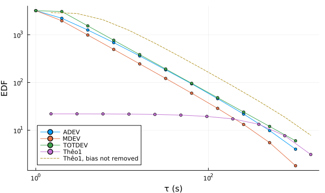

Confidence intervals
A deviation computed from a finite record is an estimate, and its last points rest on a handful of independent averages. Every estimator except mtie and tierms therefore reports, at each averaging time, the equivalent degrees of freedom (EDF) of its variance estimate and a confidence interval. This page gives the interval, the EDF model behind each estimator with its source, and how well the intervals hold in simulation.
The χ² interval
The variance estimates of stability analysis are treated as χ² variables (SP1065 §5.3): if $σ^2$ is the true variance and $s^2$ its estimate with $ν$ degrees of freedom, $ν s^2/σ^2$ follows the χ² distribution with $ν$ degrees of freedom. The two-sided interval for the deviation at confidence level $p$ is then
\[s\,\sqrt{\frac{ν}{χ^2_{(1+p)/2}(ν)}} \;\le\; σ \;\le\; s\,\sqrt{\frac{ν}{χ^2_{(1-p)/2}(ν)}} ,\]
where $χ^2_q(ν)$ is the $q$ quantile of that distribution (SP1065 §5.3.2, Eq. (45)). This is confidence_intervals. The EDF need not be an integer, and any positive value gives an interval.
The default level is 68.3 %, the one-sigma level usual on stability plots. confidence changes it:
using SigmaTau, Random
p = noise_gen(PhaseData, 4096, 1.0; sigma1 = Dict(:WHFM => 1e-12), rng = Xoshiro(1))
adev(p, [1, 16, 256, 1024]; confidence = 0.95)StabilityResult(:adev, 4 pts, τ∈[1, 1024] s, with CI)
tau dev neff ci_lo ci_hi edf noise
1 1e-12 4094 9.761e-13 1.025e-12 3204 WHFM
16 2.646e-13 4064 2.466e-13 2.855e-13 360 WHFM
256 6.109e-14 3584 4.72e-14 8.665e-14 21.78 WHFM
1024 4.085e-14 2048 2.314e-14 1.524e-13 2.999 FLFMThe interval is not symmetric. A χ² distribution with few degrees of freedom has a long upper tail, so at the last point of the table the upper limit lies several times farther from the estimate than the lower one. An error bar of plus or minus one standard error would misstate both.
ci_lower and ci_upper return the limits as vectors, and ci=false skips the noise identification, the EDF and the interval, which is faster when only the deviation is wanted.
Equivalent degrees of freedom
The EDF is the $ν$ for which the χ² distribution has the mean and variance of the estimate, $ν = 2\,E[s^2]^2 / \mathrm{Var}[s^2]$ (Greenhall and Riley (2003), Eq. (1)). It depends on the estimator, on the noise type, which sets how strongly the terms of the estimate are correlated, on the averaging factor and on the record length (SP1065 §5.4). It falls as $τ$ grows, and it is the reason for preferring one estimator to another at long $τ$:
using Plots
plt = plot(xscale = :log10, yscale = :log10, xlabel = "τ (s)", ylabel = "EDF",
legend = :bottomleft, size = (640, 380))
for (est, name) in ((adev, "ADEV"), (mdev, "MDEV"), (totdev, "TOTDEV"), (theo1, "Thêo1"))
r = est(p; noise = :WHFM)
plot!(plt, r.tau, r.edf; label = name, marker = :circle, markersize = 3)
end
r = theo1(p; noise = :WHFM, correct_bias = false)
plot!(plt, r.tau, r.edf; label = "Thêo1, bias not removed", linestyle = :dash)
plt
The record is white FM of 4096 points. At $τ = 1024$ s, a quarter of the record, the Allan deviation has 4 degrees of freedom and the total deviation 6. Thêo1 has 19 at 768 s and 8 at 1536 s before its bias is removed, and 8 and 3 as theo1 returns it: the ratio that removes the bias is an estimate too (How well the intervals hold has the model).
calculate_edf holds the models:
| Estimator | EDF model | Source |
|---|---|---|
adev, hdev | full algorithm for the overlapped estimators, from the generalized autocovariance of each noise type | Greenhall and Riley (2003), §3.6 |
mdev, mhdev | the same algorithm for the modified variances | the same |
tdev, htdev | the EDF of mdev, mhdev: the time deviations are those deviations scaled | |
adev, hdev with overlapping=false | the same algorithm for terms one averaging time apart | the same, §3.1 |
totdev | $b\,T/τ - c$ on the FM noises; a model of this package on PM noise | Greenhall et al. (1999), Eq. (26); Total estimators on PM noise |
mtotdev, ttotdev | $(T/τ)/(b_0 + b_1 τ/T)$ from $τ = 16τ_0$, the EDF of mdev below | Howe and Peppler (2001), Table 2 |
htotdev | the same form on the FM noises; a model of this package on PM noise | Howe et al. (2005), Table I; Total estimators on PM noise |
mhtotdev | a model of this package | MHTOTDEV bias and EDF |
theo1, theoh | empirical formulas, not taken below 1 and, with the bias removed, reduced on FM noise for the scatter of the bias ratio (a model of this package, below); theoh takes the EDF of adev below its crossover | SP1065 §5.2.15, Table 3 |
pdev | approximation for white PM to random-walk FM | Vernotte et al. (2021) |
mtie, tierms | none: no interval |
At $m = 1$ the total deviations equal their parent term for term, or a fixed fraction of it, and take its EDF.
The result also carries neff, the number of terms averaged. It is not the EDF: overlapping terms are correlated, and the 2048 terms at the last point of the first example hold only a few degrees of freedom.
On a record with gaps the estimators that skip missing samples compute the EDF for the record length that would give the number of terms they summed (Timestamps and gaps).
How well the intervals hold
The share of simulated records whose 68.3 % interval contains the true deviation should be 68.3 %. It is given here with the noise type stated, which tests the EDF model and the χ² form, and with the label found automatically, which is what a default call does. The true deviation is that of the parent estimator (the Allan deviation for totdev and theo1, the modified Allan deviation for mtotdev, and so on), from the mean variance of all the records.
| Estimators | Noise type stated | Automatic label |
|---|---|---|
adev, mdev, hdev, mhdev | 66 to 77 %; 81 % on flicker PM at 4 averaged points | 64 to 76 % on FM noise, 66 to 78 % on PM noise; 96 % on flicker PM at 4 averaged points |
pdev | 66 to 75 % | 66 to 75 % |
totdev | 66 to 83 % | 59 to 81 % |
mtotdev | 66 to 78 % | 65 to 78 % |
htotdev | 65 to 82 % | 58 to 78 % |
mhtotdev | 65 to 77 % | 65 to 77 % |
theo1 on FM noise | 66 to 86 % | 63 to 84 % |
The first row is for records of 8192 points at 4 to 128 averaged points, 1000 records per noise type. The others are for 1024 points, from $m = 1$ to the longest averaging time of each estimator, and for theo1 from $9τ_0$ to half the record, 2000 records per noise type. Every noise type the estimator converges for is included, and the sampling error is 1 to 1.5 points.
With the noise type stated the intervals are right within a few points or somewhat wide. The widest belong to white and flicker PM at the longest averaging times.
The automatic label costs most where the bias factor follows it as well as the EDF, and where the label is least certain. That is flicker FM. With 16 averaged points or fewer the Hadamard total deviation takes the label found at 30 points, which is right in half of the records, and its interval holds the true value in 58 to 64 % of them. The interval of the total deviation holds it in 59 % at half the record. Flicker PM with fewer than 6 averaged points goes the other way: it is labeled white FM, and the interval of the Allan and Hadamard deviations is several times wider than it need be (Noise identification has the label accuracy behind this).
The interval of theo1 carries the scatter of its bias ratio. Howe (2006), §6 and SP1065 §5.4.4 give ThêoBR the EDF of Thêo1, which takes the ratio as exact. The ratio is an estimate too, with a scatter of 26 to 32 % in variance on FM noise at every record length tried, from 256 to 16 384 points, and one draw multiplies every averaging time. With the EDF of Thêo1 and the automatic label the interval held the true value in 15 to 30 % of the FM records at $9τ_0$ and $12τ_0$, in 34 to 50 % at $48τ_0$ and $96τ_0$, and in 51 to 65 % from a fifth of the record, where theoh uses ThêoBR.
SigmaTau therefore gives ThêoBR an EDF of its own on white, flicker and random-walk FM. It takes the ratio $R$ and Thêo1 as jointly lognormal: with $c$ the relative scatter of $R$, $ν$ the EDF of Thêo1 and $ρ$ the correlation of the two on the log scale,
\[s_R^2 = \ln\bigl(1 + c^2\,[1 + (N_0/N)^{3/2}]\bigr), \qquad s_T^2 = \ln(1 + 2/ν), \qquad \mathrm{EDF} = \frac{2}{\exp(s_R^2 + s_T^2 + 2ρ\,s_R s_T) - 1} .\]
$c$, $N_0$ and $ρ$ are measured in simulation for each of the three noise types and each ratio (tools/theobr_edf.jl). On a long record $c$ is 0.30, 0.28 and 0.26 by default and 0.105, 0.088 and 0.074 with correct_bias = :published; the term in $N_0$, 55 and 225 points, makes the scatter 5 % and 35 % larger on 256 points and 1 % and 5 % on 1024. $ρ$ rises from zero at short averaging times to 0.77 to 0.89 near half the record. On a record of 4096 points or more the EDF at short averaging times is then near $2/c^2$, 22 to 30, whatever Thêo1 has, and from a fifth of the record it is 0.4 to 0.6 of that of Thêo1 (0.5 to 0.9 with correct_bias = :published).
The model is this package's own. By default it is within 25 % of the EDF measured on simulated white and flicker FM, mostly below it, and down to half of it on random-walk FM beyond $0.3\,T$, so it errs toward a wide interval. With correct_bias = :published it is up to 35 % below at short averaging times and, on flicker FM from a fifth of the record, 10 to 45 % above, where the EDF is under 7 and the interval still held the true value in 69 to 78 % of the records. The share for theo1 in the table is with this EDF; with correct_bias = :published it was 63 to 82 % with the automatic label, and at the two ThêoBR points of an octave theoh run 68 to 85 %. The deviations are those of the published ThêoBR.
On random-walk FM the published EDF formula of Thêo1 falls below 1 beyond $0.42\,T$ and below zero beyond $0.63\,T$. No quadratic statistic has an EDF below 1, and Howe (2006), Eq. (8) takes the EDF as at least 1, so the value used is never smaller. On PM noise, and at short averaging times on a record whose noise type changes further out, ThêoBR is biased, which no interval repairs (Bias correction).
What the interval leaves out
The interval describes the scatter of an estimate of Gaussian power-law noise of the stated type. It does not include:
- A wrong label. The label is itself an estimate (Noise identification). State the noise type when it is known.
- Deterministic terms. Drift, a periodic term, steps and outliers are not noise. They move the estimate, not the interval. Find and remove them first (Gaps, outliers and drift).
- The bias correction. A bias factor is the expected ratio for one noise type, applied to one record, and it follows the label (Bias correction).
- The reference. A record compares two clocks and holds the noise of both, and of the measurement system (Two-channel measurements).